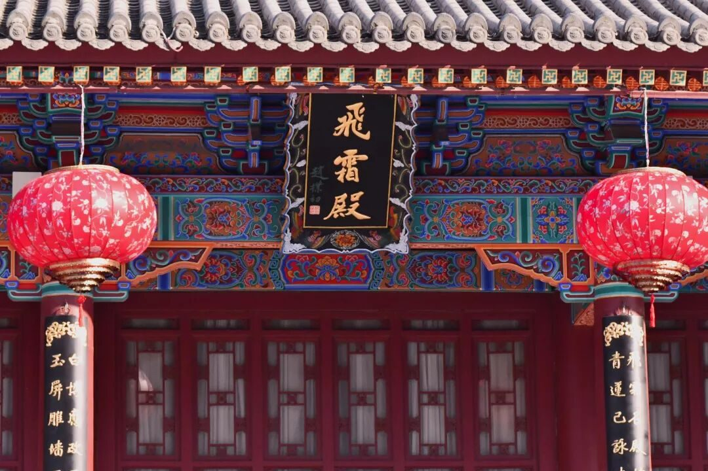
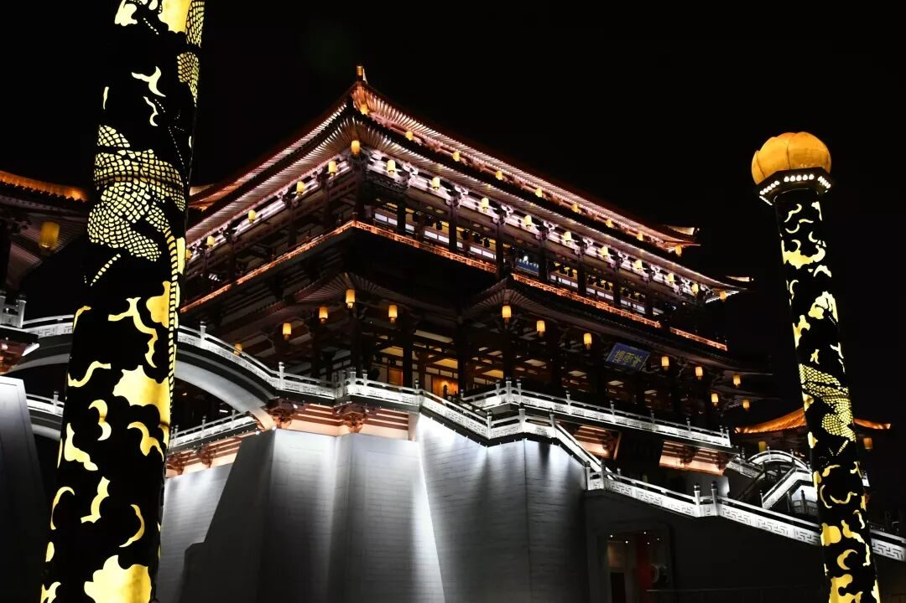
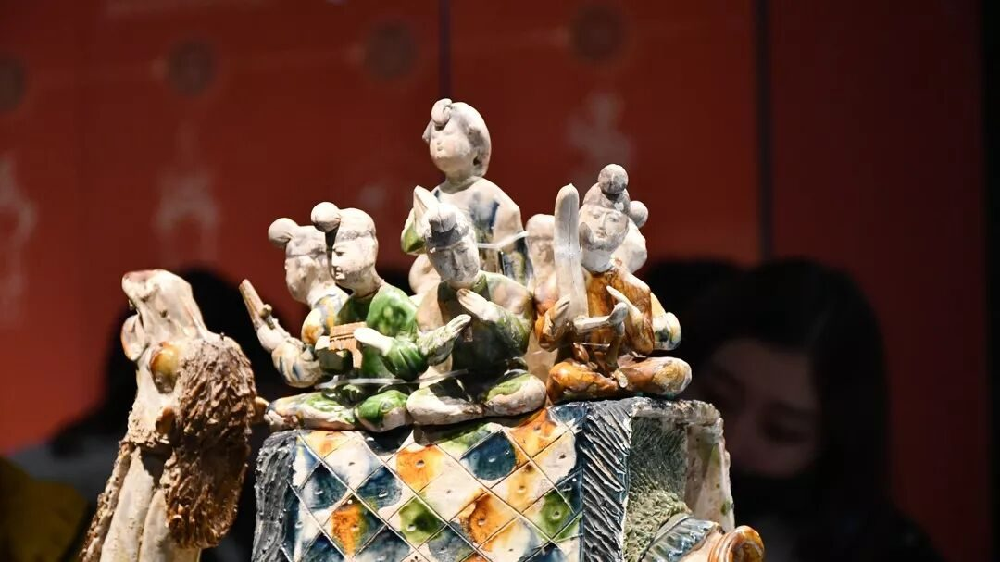
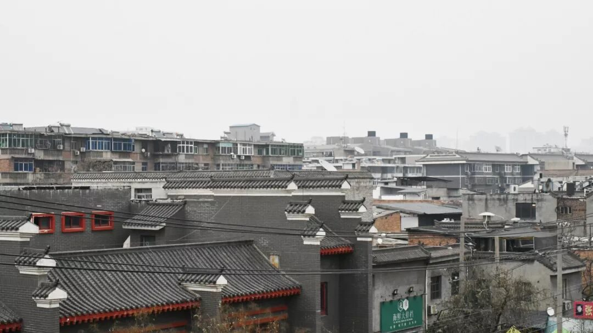

【秦简拓语·十】与城市文化共情，执历史古迹通感

与城市文化共情，执历史古迹通感
——在现代城市触碰古老灵魂的温度
他改去了曾经的外表，暗藏着无数你不知情的故事，渴望着有一天你触碰它灵魂的一处，让他有机会讲述谁都不曾记得的千年风霜。

一座古老有韵味的城市需要千百年的润养演化，而毁掉它却仅只需要短短几年的肆无忌惮。我们说城市魅力，说他回味无穷亦或是平平淡淡，一个很重要的评判方式就是看这个城市是否在现代化设施建设充足的条件下，蕴藏着千回百转的历史和脍炙人口的文化故事，在带给旅游者新鲜感的同时，又兼顾文化回味的需求。
西安这座城市的主打城市文化定位是“盛唐之都”。
就好比大唐芙蓉园，它不由分说把大唐盛世穿越时间带到了今人面前，向你毫不吝啬的骄傲的展示繁荣昌盛的盛世。在视觉效果上极大地抓住了人们的眼球，不论是单单外观还是细究每一处的戏曲或表演都狠狠的令人惊艳了一把。

你见得它花团锦簇盛世无双，见得它万丈光芒歌舞升平，只是越是见得美越是见得盛，越记不起来唐朝年号，越是看得多了越想不起来，唐朝除了一位女皇武则天，还有哪些轰轰烈烈千古传唱的故事。
你见过它绝美的曼妙身姿，更要无可回避的直面它的无数伤痕。
芙蓉园是属于盛世的故事，而与之相应的是秦朝阿房宫，他是属于末世的故事。在陕西博物馆看到的是历史考古学家兢兢业业维护下来的易碎历史，在华清宫看到的是现代人勤勤恳恳想要让世界看到的浪漫情史。像西安这样的城市，从古到今从来没有过平凡这一说。

如何把现代化融入到古老的历史底蕴，让城市在薄如蝉翼的外观下透露出历史的厚重感和温度，是一座历史古都应该在发展进程中应该考虑的重要问题。这就好比女娲造人时要思考，“如何将肉身和灵魂合而为一”这种问题同等程度的重要性。
所谓“与城市文化共情”，说的便是在无处不在的现代化中探寻到源于古老历史的影子，从高楼建筑的设计里摸索着戳一下文化的旧意。
西安这座城市在这一个方面可以说是有着得天独厚的条件的，周秦汉唐四个历史朝代是西安文化旅游的主打朝代，“十三朝古都”的名号在国内可谓人尽皆知。几乎每一个西安人的嘴里都会用着骄傲的语气说着一句“七十三位皇帝七十二座陵墓”，为自己的城市骄傲着。

可是这种骄傲真的能够维持下去吗？在这种连石碑都会被刻字，连石像都会被戏耍，连弹道都会被反复触摸的历史古迹中？
在千不该万不该中，我们到底该做些什么？

这世间有太多看不见的旧迹，也别想着在博物馆里自己才能保护文物，博物馆里的文物是我们触碰不到的美好，但是脚下的青石板转依旧是生命不能缺少之重的古迹，哪一块石头不是几千风霜前留下的古迹？哪一座山川不是亿万年守护大自然精心雕琢的美好？
在行者的路上，有人抛出了这样一个问题：我们能为后代留下什么历史价值？
千年之后，今日所写皆为古迹，今人所为皆为历史，今世之举终为不可探究之古人青史。
顺其自然而奋发进取，瞻前顾后不忘初心。
来源丨行者无疆实践团
文字丨丛雨晴
排版丨王洁
审核丨潘雯雯 邓子孚
行者无疆实践团
QQ：2758025831

随行者一起认识世界
长按二维码关注